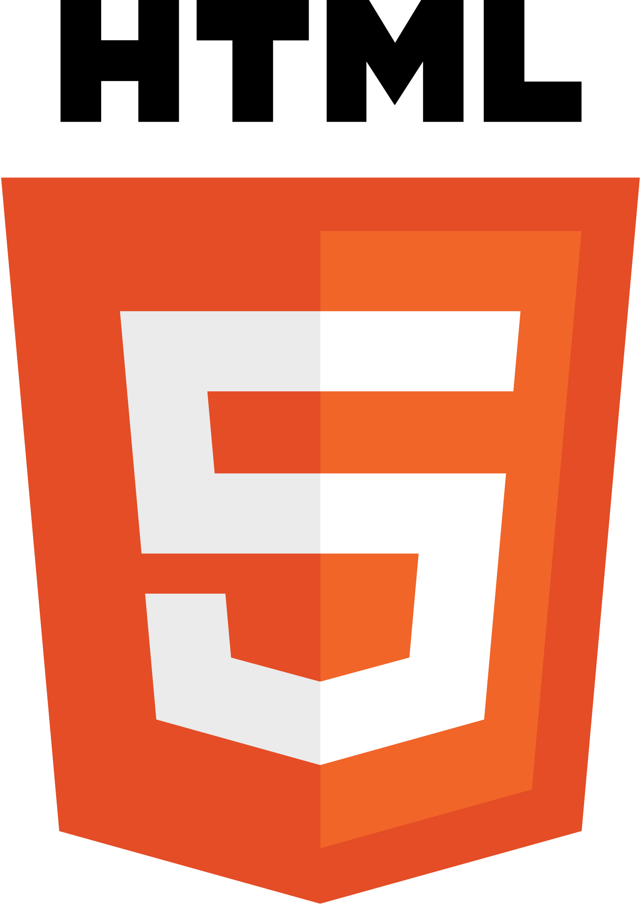
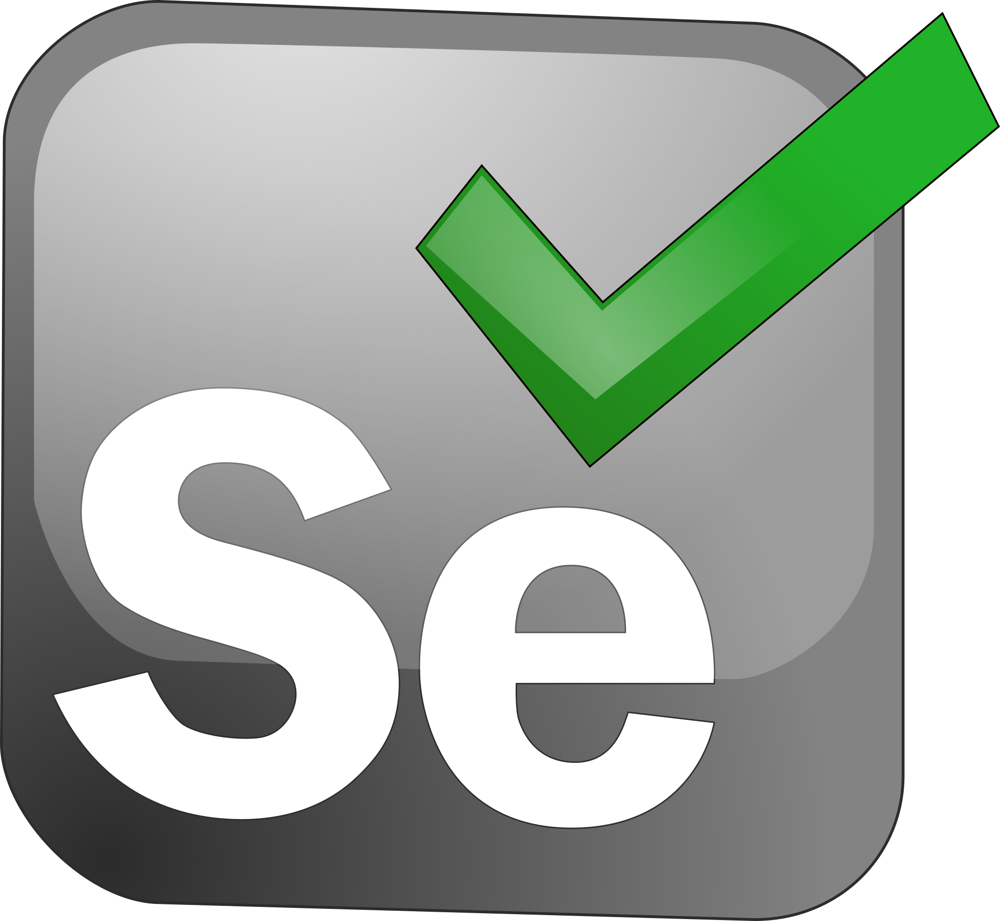
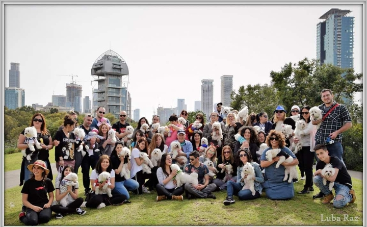

Tamar Maly
In-depth knowledge of software testing methodologies (Functional, Regression, API) within Agile environments.
Automation Project
Automation project on the website iHerb
"The World's Best Valued Website of Your Favorite Vitamins, Supplements & Much More"
The goal: To examine an existing website, explore its structure and test different aspects of the website dynamically using automation framework.


The Structure of the project:
Login • User info • Account settings • Search • Cart • E2E FlowsExplore the project's code and STD files:
Experience
- Led E2E testing for new feature integrations, analyzing database activity and anomalies using SQL, Web testing, and Active Directory.
- Established local and cloud-based testing infrastructures and complex integration environments for functional and analytical web-based systems, including log analysis.
- Collaborated in Agile (Scrum) environments across multidisciplinary teams to ensure high-quality product delivery and documentation.
Detailed Historical Role Progression:
Position 1: QA Engineer – New Feature integration (1 year)
Performed integration testing for a new feature across multiple platforms, involving SQL testing, data validation, web testing, permissions and Active Directory, in local/cloud labs.
Position 2: QA Engineer – Web Team (2 years)
Conducted extensive functional, web, and analytical testing for the company's Web interface. Established and managed local and cloud-based testing labs.
Position 3: QA Engineer – Multidisciplinary Testing Team (6 months)
Focused on cross-departmental testing projects integrating shared features across various teams.
- Testing the app on many different models of mobile phones and different OS on the web.
- Network testing on all ends of the product.
- Active professional team leader to the QA team members in Ukraine, reviewing work and mentoring.
- Reorganizing and renewing the entire testing unit including methodology and writing tests.
- Using Jira to manage tests and other testing tools for Mobile & Web tests.
- Agile environment, working closely with developers, product team, help desk, and designers.
- Executing UI/UX, Functional, E2E, Regression, and Sanity testing.
- ISSTA – mobile web / app
- Mako – mobile interface
- Isracard – mobile application
- Keeping projects on track: planning, scheduling, coordinating with R&D resources.
- Identifying and analyzing trends of players.
- Inception and implementation of new SOPs and introducing the team to new technologies.
- Running, training and helping to grow a team of up to 12 people.
- Keeping projects on track: planning, scheduling, coordinating with R&D resources.
- Analyst at the Big Data team: training an indexing and retrieval system (2013).
- Assisting a Data Clearing team to transfer data between classified networks in complex cases (2012).
Education
Skills
AI & Prompt Engineering
- Generative AI (LLMs)
- Workflow Optimization
- Technical Prompt Refinement
- Data Workflow Extraction
Languages
- JAVA
- Python
- HTML / CSS
- SQL
Tools & Methods
- Selenium & TestNG
- JIRA & MTM
- Postman & API Testing
- Active Directory
Systems & Ops
- Windows & Linux
- NOC Infrastructure
- Log Analysis
- Team Leadership
Community Involvement & Volunteering

Dogs Welfare Group Administrator
Feb 2016 - Present · Maltese Lovers Israel
Group administrator at Maltese Lovers Israel - a dog welfare Facebook group. Fosters lost/unwanted dogs at home, helps find them new homes, and arranges large-scale group meetings and fundraising.
Community Garden Manager
2025 - 2026
Manage the local neighborhood garden, acting as the primary liaison with the Tel Aviv municipality and residents. Oversee planting schedules and organize community events, volunteer days, and educational activities for children.